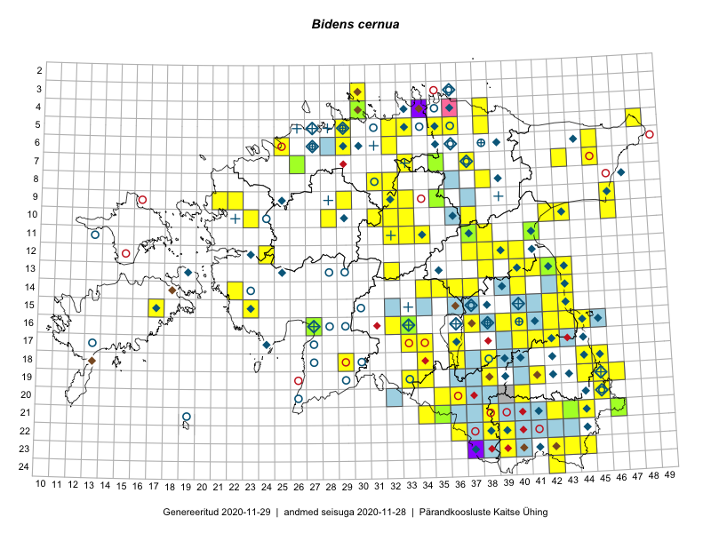

Bidens cernua
Uuendatud: 2016-12-01
Kaardile koondatud taksonid: Bidens cernua L.

Kaart põhineb 45 kirjel.
Kuvatud viited 20 esimesele andmebaasikirjele, ülejäänud PlutoFis
- Thea Kull: 2015-07-07: 16-40: ala
- Ott Luuk, Peedu Saar: 2015-09-03: 03-30: ala
- Peedu Saar: 2015-08-11: 13-41: ala
- Peedu Saar, Ott Luuk: 2015-08-12: 23-42: ala
- Peedu Saar, Eerik Leibak: 2015-08-16: 12-40: ala
- Peedu Saar, Ott Luuk: 2015-09-03: 04-30: ala
- Peedu Saar: 2015-10-01: 22-38: ala
- Toomas Kukk, Ott Luuk, Sander Laherand: 2014-08-24: 14-22: ala
- Peedu Saar: 2015-08-21: 16-42: ala
- Thea Kull, Meeli Mesipuu: 2015-08-12: 16-43: ala
- Ott Luuk, Peedu Saar: 2015-08-26: 09-21: ala
- Ott Luuk, Toivo Sepp: 2015-08-18: 11-32: ala
- Eeva-Maria Jeletsky, Tarmo Niitla: 2015-08-12: 21-38: ala
- Thea Kull: 2014-07-14: 09-33: ala
- Meeli Mesipuu, Thea Kull: 2015-08-19: 19-46: ala
- Kadi Palmik, Helle Mäemets: 2015-07-22: 16-39: ala
- Meeli Mesipuu, Thea Kull: 2014-08-14: 13-43: ala
- Meeli Mesipuu, Thea Kull: 2015-08-14: 13-42: ala
- Kadi Palmik, Helle Mäemets: 2015-08-13: 19-41: ala
- Meeli Mesipuu, Thea Kull: 2015-08-12: 16-43: GPS punkt